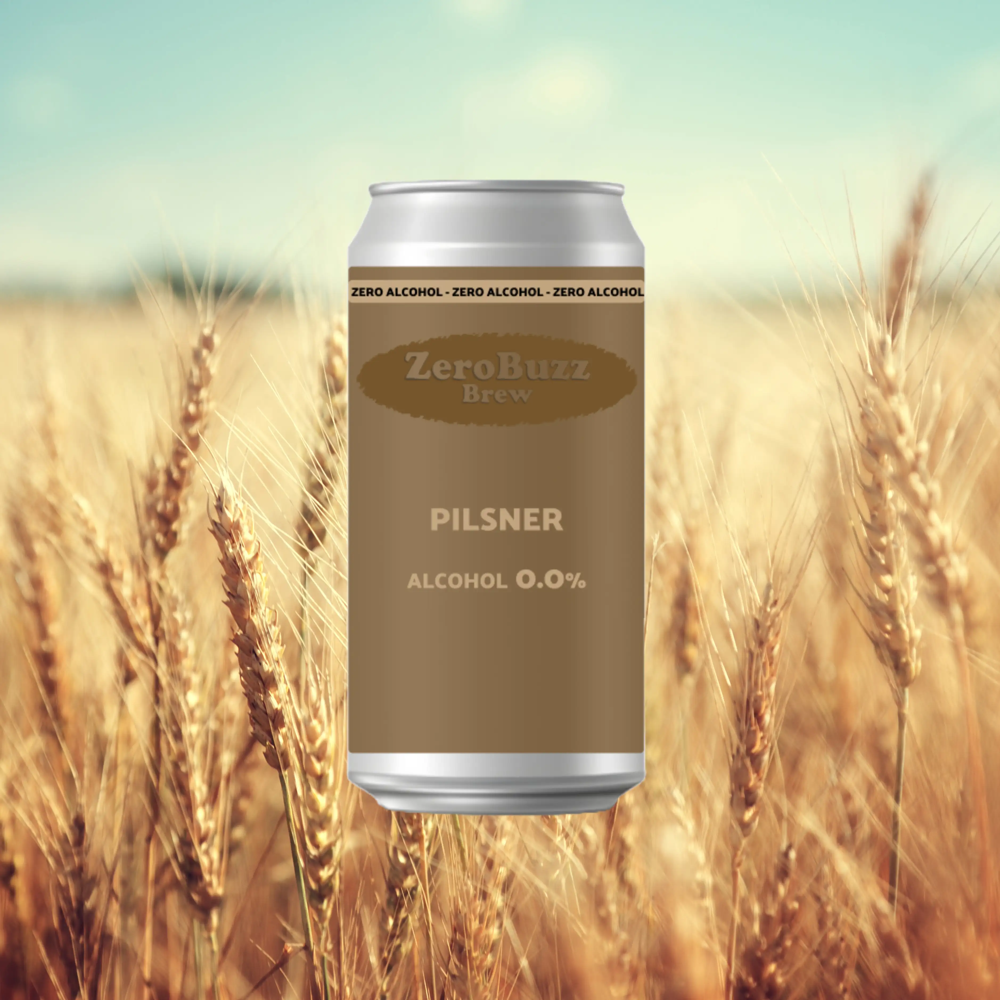
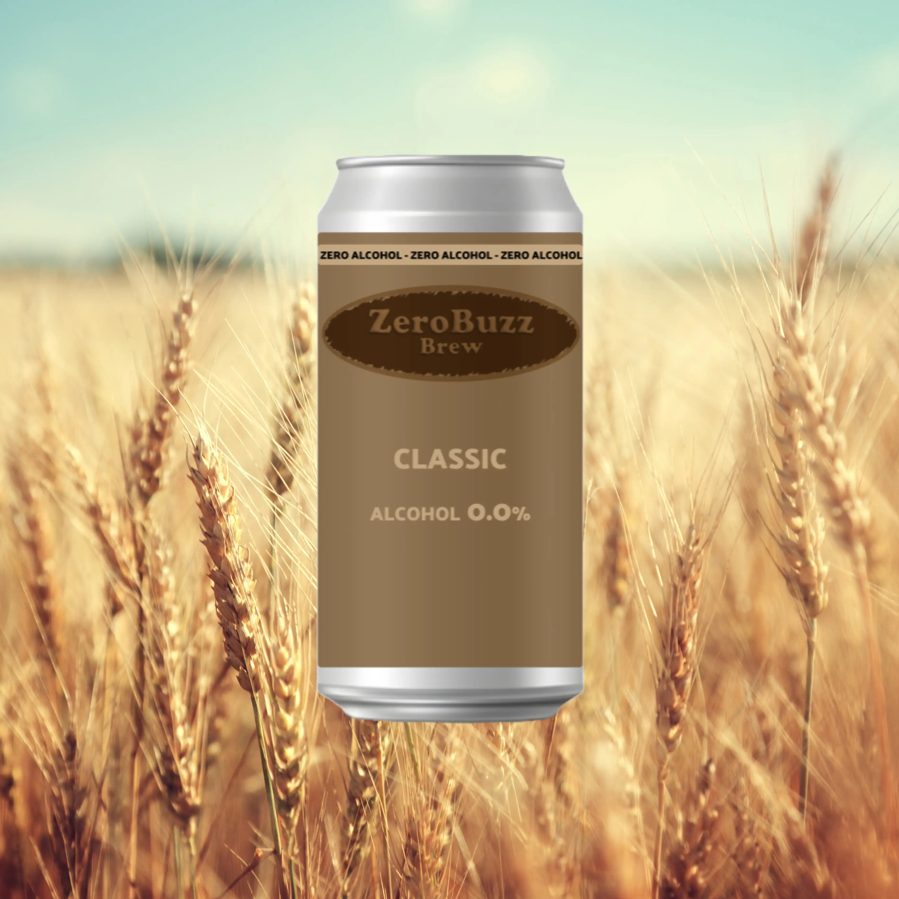

Varianter

ZeroBuzz Pilsner
Har en strågylden farve, let legene og med mælkehvid skum på toppen. Smagen er let og blød, efterfulgt af en mild bitterhed. Dufter af en blanding mellem brændte nødder og søde frugter. Smagsmæssig kan den sammenlignes med Grøn Tuborg og diverse andre pilsnere.
